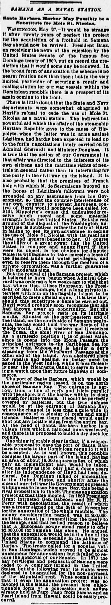
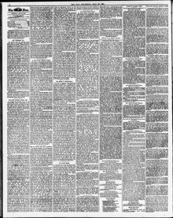

See the full pageVer la página completaFor the acquisition of a fcothold In Sc mane Bay shouldPues la adquisición de un punto de apoyo en la bahía de Samaná debería
The Sun reported renewed United States interest in securing a naval coaling and repair station at Samaná Bay following Haiti's refusal to grant access to Môle Saint-Nicolas. The article noted that although political annexation had been rejected under President Grant, the strategic advantages of Samaná Bay continued to attract American diplomatic and naval planners.The Sun informó sobre el renovado interés de Estados Unidos por asegurar una estación naval de carbonera y reparación en la bahía de Samaná tras la negativa de Haití a otorgar acceso a Môle Saint-Nicolas. El artículo señalaba que, aunque la anexión política había sido rechazada bajo la presidencia de Grant, las ventajas estratégicas de la bahía de Samaná seguían atrayendo a los planificadores diplomáticos y navales estadounidenses.
FULL TEXT:TRADUCCIÓN:
SAMANA AS A NAVAL STATION.SAMANÁ COMO ESTACIÓN NAVAL.
Santa Barbara Harbor May Possibly be a Substitute for Mole St. Nicolas.El puerto de Santa Bárbara puede posiblemente ser un sustituto del Môle de San Nicolás.
WASHINGTON, May 27.—It would be strange if after twenty years of neglect the project for the acquisition of a foothold in Samana Bay should now be revived. President Baez, on receiving the news of the rejection by the United States Senate of the famous San Domingo treaty of 1869, put on record the prediction that it would some day be renewed. In the broad form of annexation the scheme is no nearer fruition now than then; but in the very limited particular of securing a repair and coaling station for our war vessels within the Dominican republic there is a prospect of its again coming to the front.WASHINGTON, 27 de mayo.—Sería extraño si después de veinte años de negligencia el proyecto para la adquisición de un punto de apoyo en la Bahía de Samaná reviviera ahora. El presidente Báez, al recibir la noticia del rechazo por el Senado de los Estados Unidos del famoso tratado de Santo Domingo de 1869, puso en registro la predicción de que algún día sería renovado. En la forma amplia de anexión el plan no está más cerca de su fruición ahora que entonces; pero en el particular muy limitado de asegurar una estación de reparación y carboneo para nuestros buques de guerra dentro de la república dominicana hay una perspectiva de que vuelva al frente.
There is little doubt that the State and Navy departments were somewhat chagrined at Hayti's refusal to cede the use of Mole St. Nicolas as a naval station. The indirect but powerful aid which the affair of the steamship Haytian Republic gave to the cause of Hippolyte, when the latter was in arms against Légitime, had hardly been expected to lead up to the futile negotiations lately carried on by Admiral Gherardi and Minister Douglass. It is true that the action of our Government in that affair was directed to the interests of its own citizens and the maritime rights of neutrals in general rather than to interfering for one party in the civil war on the island. It is also probable that the promises of French help with which M. de Sesmaisons buoyed up the hopes of Légitime's followers were not grounded on any assurances from his Government, so that the counter-interference of our own country to prevent European control of Hayti would not have been called for. Still, Hippolyte's cause did undoubtedly receive much moral and some material strength from the United States. But the real ground of the disgust of the Washington authorities is doubtless rather the folly of Hayti in failing to see its own advantage in ceding the use of Mole St. Nicolas, with its resulting local and general benefits to her. Of course the ability of a great power like the United States to conquer and annex Hayti, if that were its object, is too obvious for dispute; while its willingness to take merely a lease of the desired lands and water privileges, and even to receive them through the medium of a private corporation, was a further guarantee of its moderate aims.Hay poca duda de que los departamentos de Estado y Marina estaban algo mortificados por la negativa de Haití de ceder el uso del Môle de San Nicolás como estación naval. La ayuda indirecta pero poderosa que el asunto del vapor Haytian Republic dio a la causa de Hippolyte, cuando este último estaba en armas contra Légitime, difícilmente se había esperado que condujera a las negociaciones fútiles últimamente llevadas a cabo por el almirante Gherardi y el Ministro Douglass. Es cierto que la acción de nuestro Gobierno en ese asunto fue dirigida a los intereses de sus propios ciudadanos y a los derechos marítimos de los neutrales en general más que a interferir por un partido en la guerra civil en la isla. También es probable que las promesas de ayuda francesa con las que M. de Sesmaisons elevó las esperanzas de los seguidores de Légitime no estuvieran fundadas en aseguramientos de su Gobierno, de modo que la contrainterferencia de nuestro propio país para prevenir el control europeo de Haití no habría sido requerida. Todavía, la causa de Hippolyte sí recibió indudablemente mucha fuerza moral y alguna material de los Estados Unidos. Pero el fundamento real del disgusto de las autoridades de Washington es sin duda más bien la necedad de Haití al no ver su propia ventaja en ceder el uso del Môle de San Nicolás, con sus resultantes beneficios locales y generales para ella. Por supuesto la capacidad de una gran potencia como los Estados Unidos de conquistar y anexar Haití, si ese fuera su objeto, es demasiado obvia para discusión; mientras que su disposición a tomar meramente un arrendamiento de las tierras y privilegios de agua deseados, y aun a recibirlos a través del medio de una corporación privada, era una garantía adicional de sus fines moderados.
But the revival of the Samana project, which is believed to have begun when Admiral Gherardi was ordered a few weeks ago to visit that bay, where Gen. Ulises Heureaux, the President of San Domingo, held a long private interview with him on the flagship, is not to be ascribed to mere official pique. It is true that, should this substitute scheme be carried out, Hayti would probably soon recognize that she had thrown away an opportunity. But the Samana Bay project rests on its intrinsic merits. Situated at the northeastern end of the island, on the south side of Samana peninsula, the bay could hold the war fleets of the whole world. At the western end it receives the Yuma, the chief river of San Domingo. As a strategic position it is of great value, since it opens into the Mona Passage, the principal entrance to the Caribbean Sea for vessels from Europe, and is hardly a day's steaming from the Windward Passage at the other end of the island. As a sheltered place for repairs and coaling, no better need be asked in the West Indies, while it is sufficiently near the Nicaragua Canal to serve in keeping a watch upon that future highway of commerce.Pero el renacimiento del proyecto de Samaná, que se cree comenzó cuando el almirante Gherardi recibió orden hace unas semanas de visitar esa bahía, donde el general Ulises Heureaux, el Presidente de Santo Domingo, tuvo una larga entrevista privada con él en el buque insignia, no debe atribuirse a mero despecho oficial. Es cierto que, si este plan sustituto se llevara a cabo, Haití probablemente pronto reconocería que había desperdiciado una oportunidad. Pero el proyecto de la Bahía de Samaná descansa en sus méritos intrínsecos. Situada en el extremo noreste de la isla, en el lado sur de la península de Samaná, la bahía podría contener las flotas de guerra del mundo entero. En el extremo occidental recibe el Yuma, el río principal de Santo Domingo. Como posición estratégica es de gran valor, ya que se abre al Paso de la Mona, la entrada principal al Mar Caribe para buques desde Europa, y está apenas a un día de navegación a vapor del Paso de los Vientos en el otro extremo de la isla. Como lugar abrigado para reparaciones y carboneo, no puede pedirse mejor en las Indias Occidentales, mientras está suficientemente cerca del Canal de Nicaragua para servir en mantener vigilancia sobre esa futura vía de comercio.
The port of Santa Barbara, which would be the particular region leased, is on the north shore of Samana Bay. The entrance is narrow, from a line of reefs and islets parallel with the shore, but the harbor within is deep enough for large vessels. It could be perfectly covered by batteries, but the true defence would be at the entrance of Samana Bay, where the channel is less than a mile wide in consequence of a cluster of reefs and small islands. Batteries there placed would easily shut out any hostile ships from the entire bay. At the head of Santa Barbara harbor is a village from which a railroad runs westward, and there it is proposed to build a dry dock for repairs.El puerto de Santa Bárbara, que sería la región particular arrendada, está en la costa norte de la Bahía de Samaná. La entrada es estrecha, de una línea de arrecifes e islotes paralela a la costa, pero el puerto interior es suficientemente profundo para buques grandes. Podría ser perfectamente cubierto por baterías, pero la verdadera defensa estaría en la entrada de la Bahía de Samaná, donde el canal tiene menos de una milla de ancho a consecuencia de un grupo de arrecifes y pequeñas islas. Baterías allí colocadas fácilmente excluirían cualquier buque hostil de toda la bahía. A la cabecera del puerto de Santa Bárbara hay una aldea desde la cual un ferrocarril corre hacia el oeste, y allí se propone construir un dique seco para reparaciones.
One thing tolerably clear is that if a reasonable proposal to lease the port of Santa Barbara is made to the Dominican republic it will be accepted. As is well known, this republic occupies the larger part of the island, having an area of about 18,000 square miles, of which only an insignificant part would be taken. Even as early as 1850, only half a dozen years after its independence of Hayti had been declared, San Domingo talked of annexation to the United States, and shortly after the close of our civil war its Government expressed willingness to lease Samana Bay, this being a rival proposition to the St. Thomas annexation project at that time mooted. In 1869 President Grant intrusted Gen. Babcock and Mr. R. H. Perry with negotiations, the result of which was a treaty signed on the 29th of November for the annexation of the whole republic. The money consideration named was $1,500,000, and Gen. Grant, in transmitting the treaty to the Senate, said that he had reason to believe that a European power stood ready to offer $2,000,000 for Samana Bay alone. He argued that the annexation would be in the line of the Monroe doctrine, especially in its aiding the United States to command the Isthmus of Darien. The treaty called for a popular vote in San Domingo, which proved to be almost unanimous for annexation; but it failed to secure the approval of our Senate. In 1873 the bay privileges and peninsula of Samana were ceded to a company formed in the United States, but the following year its rights were declared to be annulled for the non-payment of the stipulated rent. What seems clear is that if even the annexation project was so favored in the island, the present less objectionable form of a concession such as we already hold at Pago Pago from Samoa and at Pearl Island from Hawaii, could be easily procured.Una cosa tolerablemente clara es que si una propuesta razonable de arrendar el puerto de Santa Bárbara se hace a la república dominicana será aceptada. Como es bien sabido, esta república ocupa la mayor parte de la isla, teniendo un área de unas 18,000 millas cuadradas, de la cual solo una parte insignificante sería tomada. Tan temprano como 1850, solo media docena de años después de que su independencia de Haití había sido declarada, Santo Domingo habló de anexión a los Estados Unidos, y poco después del cierre de nuestra guerra civil su Gobierno expresó disposición de arrendar la Bahía de Samaná, siendo esto una proposición rival al proyecto de anexión de Santo Tomás entonces planteado. En 1869 el presidente Grant confió al general Babcock y al Sr. R. H. Perry las negociaciones, cuyo resultado fue un tratado firmado el 29 de noviembre para la anexión de la república entera. La consideración de dinero nombrada fue $1,500,000, y el general Grant, al transmitir el tratado al Senado, dijo que tenía razón para creer que una potencia europea estaba lista para ofrecer $2,000,000 solo por la Bahía de Samaná. Argumentó que la anexión estaría en la línea de la doctrina Monroe, especialmente en su ayuda a los Estados Unidos para dominar el Istmo de Darién. El tratado pedía un voto popular en Santo Domingo, que resultó ser casi unánime por la anexión; pero falló en asegurar la aprobación de nuestro Senado. En 1873 los privilegios de la bahía y la península de Samaná fueron cedidos a una compañía formada en los Estados Unidos, pero al año siguiente sus derechos fueron declarados anulados por el no pago de la renta estipulada. Lo que parece claro es que si aun el proyecto de anexión fue así favorecido en la isla, la presente forma menos objetable de una concesión tal como ya tenemos en Pago Pago de Samoa y en Pearl Island de Hawái, podría ser fácilmente procurada.
[Editor's note: the paper writes of the east as part of Hayti. From 1822 to 1844 the Dominican Republic was held by Haitian military occupation, against its people's will; it restored its independence on February 27, 1844.][Nota del editor: el periódico habla del este como parte de Haití. De 1822 a 1844 la República Dominicana estuvo bajo ocupación militar haitiana, contra la voluntad de su pueblo; restauró su independencia el 27 de febrero de 1844.]
The Sun. New York, May 28, 1891.
See the original at the Library of CongressVer el original en la Biblioteca del Congreso
Published by: Benj. H. Day, 1833-1916.Publicado por: Benj. H. Day, 1833-1916.
Edition: Edition 1Edición: edición 1
Page: 6Página: 6
Frequency: daily (1833–1916)Frecuencia: diario (1833–1916)
Collection: Chronicling America, Library of CongressColección: Chronicling America, de la Biblioteca del Congreso
LCCN: sn83030272LCCN: sn83030272
ISSN: 1940-7831ISSN: 1940-7831
OCLC: 9406339OCLC: 9406339
Rights: public domain, according to the Library of CongressDerechos: dominio público, según la Biblioteca del Congreso